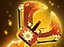
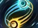
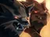
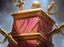
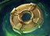
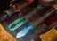
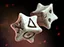
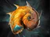

Serendipity Compass
Underused pieces are at lower prices.
- The lower pick rate brings the even lower price, maximum -$2 and stackable with Talent Greedy, but no lower than 0.
Relics come from relic boxes, the reward for winning the creep rounds at 10, 20, 30, 40 and 50. Each game only 10 random relics are available, and a relic lasts until the next relic round. Talents are chosen at rounds 5, 15, 25 and 35. More about relics and talents →
Underused pieces are at lower prices.

You gain +1 to the level of loot tokens you get for recasting equipment.
After recasting 2 pieces of Spoil tokens, the weapon smith will disappear.

Your win or lose streak will not be terminated and when the relic disappears, you will receive a corresponding level loot token based on the highest reward/compensation held during that time.
Relic Consumable: Click to Use
Put a piece into an egg which has a chance to grow once every round. You can break it anytime, hatching a piece according to the points.
Fill your bench with magic vegetable sprouts. The sell value of these sprouts has a dynamic chance to increase at the beginning of every round. You can sell the sprouts any time to reuse the bench.
Plants a Mango Tree by the side of your Chessboard.
Drops an Enchanted Mango whenever your home battle result differs from the last round. The tree wilts after 8 drops. A Golden Mango will be dropped if the mango tree is still alive at Relic expiration.

All creeps duplicate themselves and counted as level +1.
When your courier takes damage, you immediately gain the corresponding (damage taken) amount of experience.
Relic Consumable: Click to Use
Choose an ally piece and put it into the wheel of wonder, DISCOVER a special version of it with an extra random synergy.
All offside branches unlock automatically in this single game.

Packs an ally piece, at the beginning of next round, transforms it into a randon new piece of the same Level and Rank. 15 times available.

Relic Consumable: Click to Use
Transfer 20% of the higher one of your Health and Mana into another. Can be used twice
Replicate your last relic.

Relic Consumable: Click to use
Consumes (item level) charges to replace the item carried by the courier with a random item of the same level. Can be used 15 times.

Refund 1~2 random Gold if you fail to recruit any owned chess piece.
There is a chance to directly obtain a ★★ piece on recruitment if you already owned one.

Reduces damage taken from home defeats or increases damage dealt in away-home victories by your (current rank + 1)
+1 Gold on awayhome victory
+1 Gold on home defeat
-1 Price for owned pieces
Has %per% Chance to +1 level recruit
+30% Lifesteal on damaging courier
-20% Damage taken on courier
Higher chance to recruit IO
Max courier level unlocked